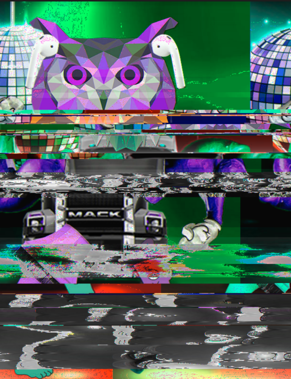
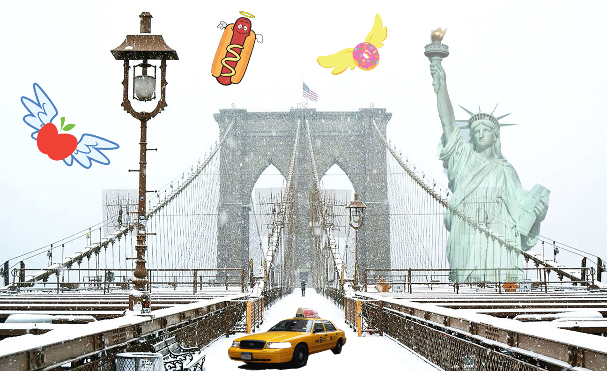

Dancing Owl, Digital Image, 2019
Dancing Owl is a glitched digital image. I started off by playing around and combining different images to create an exquisite cyborg. Then I glitched the image in Audacity, using six different effects which were distortion, wahwah, fade out, compressor, repair, and repeat. And then for the final result, I interrupted the image again by using text editing software in which I recomposed and deleted some parts of the text.

Iconic Brooklyn Bridge, Digital Image, 2019
Iconic Brooklyn Bridge is a digital composite image including all of the icons that symbolize for New York, one of the most famous places in America. This is not only what peole think when talking about New York, but more importantly how it is represented to the world. I used Photoshop to create this image.
School Walk, Digital Sound, 1:02, 2019
This piece combines my own recordings of a walk around school in which I went to the Starbucks in the ballroom to order a drink and play bowling with my friends. I used three different forms of audio signals to create this work that could be ideally represented as how our modern world would sound like when it's moving: fast and high-pitched.
The Swirl, Digital Video, 1:09, 2019
This is a digital video that combines my own recorded footage from visitng a special exhibition at One Dome Museum in San Francisco and footage of people focusing to do their own things in school. I created this work to show how our lives in reality are being swirling and moving away from the true beauty of nature.

Location Tracker, Interactive Net Art, 2019
Location Tracker is a project that uses Google location history to portrait our characteristics and experiences through places that we've been to. Not only serving as a memory reminder, it also gives a bunch of helpful information of places we've been and the routes we've travelled in our timeline.
Click Here for Site

On Fire, Interactive Net Art using p5.js, 2019
On Fire is a fun, animated, and interactive artwork that shows my very first experience with coding. It's slightly related to my last Net Art Project, which I used the same sky-related concept to create a fun story by using p5.js.
Click Here for Site
Hypnagogia, Digital Video, 2:00, 2019
Hypnagogia is a project describing a dream-like stage that occurs in the transition between wakefulness and sleep. It reflects what I've been experiencing for a while, a feeling of falling and floating neither in my dream nor reality. The whole concept for this project is to explore what our brains are capable of doing. In hypnagogia, both alpha and theta brain waves are present. Typically these brain waves present separately, during waking or sleeping states, respectively, their coexistence during hypnagogia accounts for the bizarre imagery and auditory experience. I used Audition to combine five different forms of audio recordings to create a new sound. Then in Premiere, I created a video using my own recorded footage and that new sound that portrays one of my actual dreams while experiencing this stage of sleep.